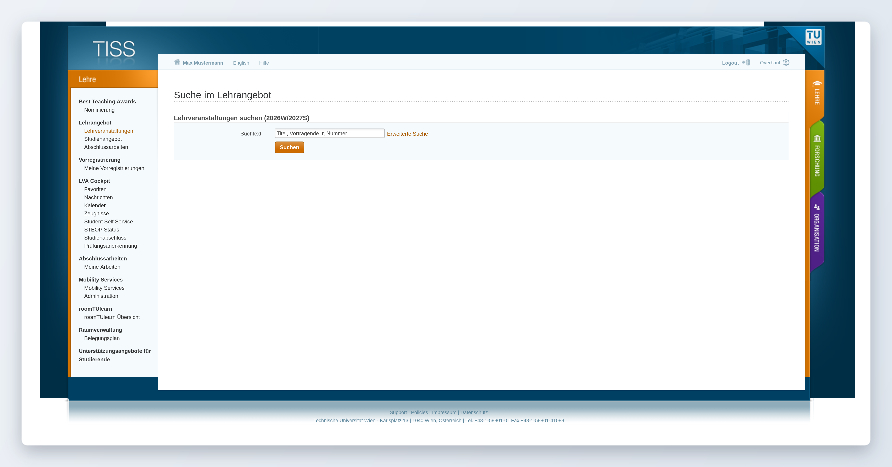
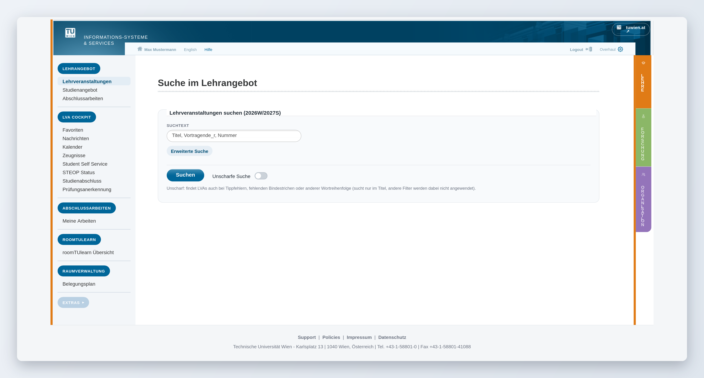
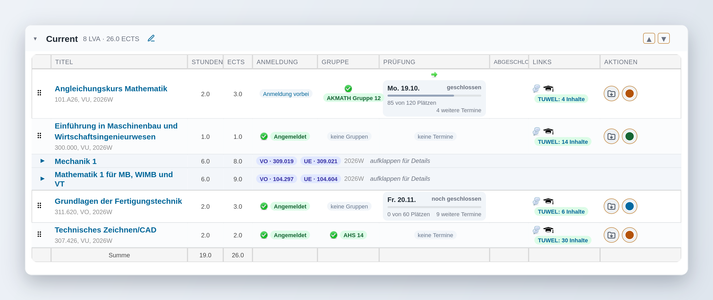
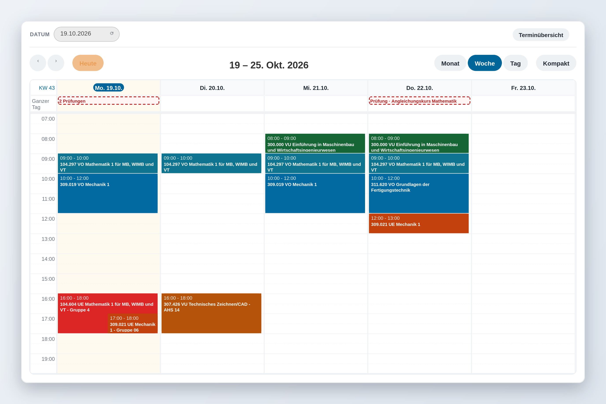

TISS Overhaul – vorher / nachher
Regler ziehen (oder Pfeiltasten), um TISS mit und ohne Overhaul zu vergleichen.


NachherVorher

Favoriten: Anmelde-, Gruppen-, Prüfungs- und TUWEL-Status auf einen Blick, Kompaktansicht für VO/VU/UE.

Kalender: Farbe pro LVA, Prüfungen gestrichelt, Raum- und Kartenlinks im Popup.